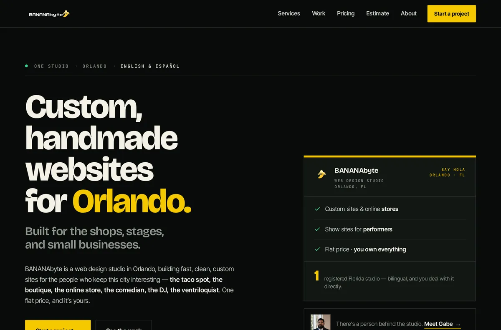
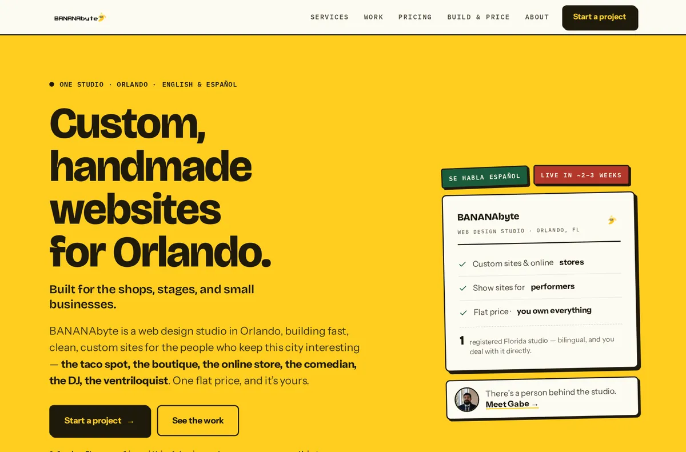
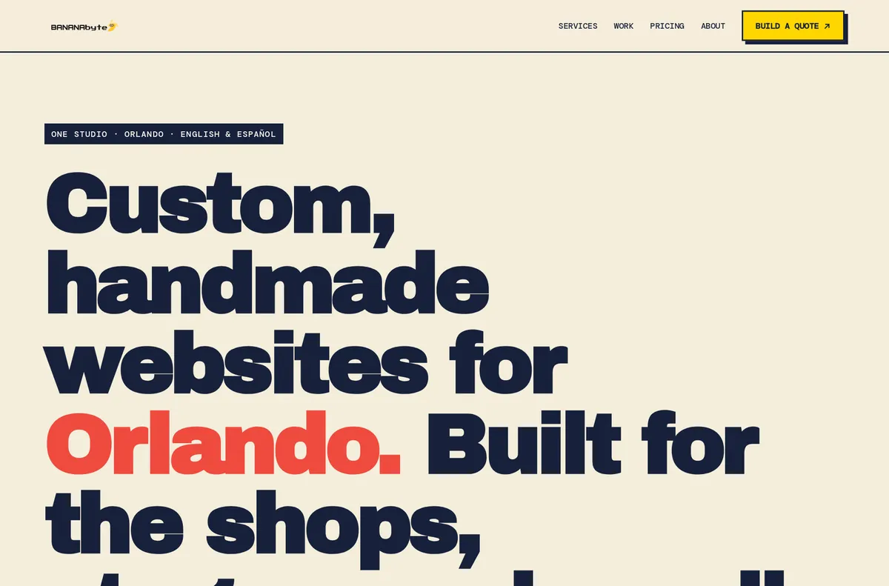

[ Redesign candidates · same site · 5 models · pick one to ship ]
The real BANANAbyte site — home, About and the price estimator — rebuilt end to end by five different models, each free to bring its own art direction. Same content, same working contact form and estimator; only the design changes.
All 15 pages passed a functional gate → no JS errors · contact form wired to /api/contact (Turnstile + honeypot + all fields) · estimator totals update live · nav links resolve · no mobile overflow. These are preview candidates (noindex); nothing on the live site changed. Open a set, then tell me which one to make the real bananabyte.io.

“Ink · Peel · Paper”
Full-bleed color slabs — near-black ink, cream paper, banana yellow, moss green — stacked with hard unblurred seams so the palette turns like a printed page. Bricolage Grotesque set huge, Inter Tight for reading, JetBrains Mono reserved for section indices, labels and money: services become a numbered editorial index, pricing a dotted-leader price sheet, the estimator a spec sheet.

“The Sign Shop”
BANANAbyte as a neighborhood sign painter — banana yellow used as a full painted surface (not a timid accent), warm ink, leaf green for the storefront world, rationed curtain red for the stage. The estimator’s signature is a perforated thermal-receipt card stamped “NOT A BILL”.

“Field guide × showbill”
An Orlando field guide crossed with an offset-printed showbill: warm paper, inky navy, banana yellow, coral annotations, oversized editorial type and tactile hard-shadow components. The highest-contrast, most magazine-cover take of the five.